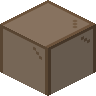
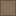
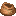

#c:dyed/brown
物品标签 · 12 个已收录成员
标签成员 (12)

棕色玻璃门glassential:brown_glass_door

棕色玻璃活板门glassential:brown_glass_trapdoor

棕色收纳袋minecraft:brown_bundle
 棕色挽具
棕色挽具minecraft:brown_harness
 棕色雪怪皮毛
棕色雪怪皮毛eternal_starlight:brown_yeti_fur
 棕色雪怪皮毛地毯
棕色雪怪皮毛地毯eternal_starlight:brown_yeti_fur_carpet
 棕色横旗
棕色横旗supplementaries:flag_brown
 棕色礼物盒
棕色礼物盒supplementaries:present_brown
 棕色陷阱礼物盒
棕色陷阱礼物盒supplementaries:trapped_present_brown
 棕色蜡烛烛台
棕色蜡烛烛台supplementaries:candle_holder_brown
 棕色遮阳棚
棕色遮阳棚supplementaries:awning_brown
 棕色彩旗
棕色彩旗supplementaries:bunting_brown
使用该标签的配方
无